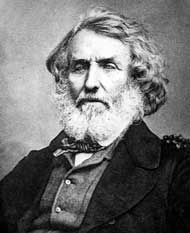

Еверест е връх в Хималаите, най-високият от 14-те планински върхове осемхилядници, в Азия и на Земята. Намира се в Махалунгурския дял на Хималаите на границата между Непал и Китайския Тибетски автономен регион. Западният и югоизточният склон на върха представляват граничната линия между двете страни.
Той е най-високият връх на Земята с височина 8848,86 m. Наречен е на името на директора на Индийската топографска служба полковник Джордж Еверест, заемал този пост през 1830 – 1843 г. Откъм Непал е разположен в Национален парк Сагарматха, който е биосферен резерват защитен от ЮНЕСКО.
Статутът на най-висок връх в света привлича катерачи от всички категории, от най-опитните до новаци, готови да заплатят солидни суми на професионални планински водачи, обикновено шерпи, за да направят успешно изкачване. Планината не изпъква с изключителни алпинистки трудности при изкачването по стандартния маршрут, за разлика от други осемхилядници като К2 или Нанга Парбат. Въпреки това съществуват множество специфични опасности, като височинна болест, лошо време и силен вятър.
Експедициите до върха са значителен източник на туристически приходи за Непал, чието правителство изисква от експедициите разрешително за изкачване, което може да достигне от $10 000 до $25 000 на човек, отделно другите разноски варират до около $65 000 на човек. Условията в „Зоната на смъртта“ са толкова тежки, че повечето трупове са оставени там, където човекът е загинал, и понякога са демотивиращ фактор, тъй като се виждат по стандартния и други маршрути за изкачване.
Наречен „връх Б“ през 1847 г. (тъй като тогава Кангчендзьонга се счита за най-високия връх в света), а след това „връх XV“ през 1849 г. (Майкъл Хенеси, британски инженер геодезист, дава римски цифри за имена на върховете в Хималаите от изток на запад), през 1865 г. върхът придобива английското име Еверест, дадено му от Андрю Уо (Andrew Waugh), британски офицер и геодезист, генерален инспектор на Индия, наследил на този пост сър Джордж Еверест.
Съществуват много местни имена, най-известното от които, вероятно в продължение на векове, е името на тибетски – Qomolangma ( ཇོ་ མོ་ གླང་ མ ), записано за първи път с китайска транскрипция в атлас от 1721 г. по време на управлението на император Канси от династията Цин, което след това се появява като Tchoumour Lancma на карта от 1733 г., публикувана в Париж от френския географ Д'Анвил. Популяризирано е и като Chomolungma и Jo-mo-glang-ma.
| Параметър | Информация |
|---|---|
| Височина на върха | 8,848 метра (29,029 фута) |
| Географско местоположение | Хималаите, на границата между Непал и Тибет |
| Първо изкачване | 29 май 1953 г. от Сър Едмънд Хилари и Тенцинг Норгей |
| Сложност на изкачване | Средна |
| Брой смъртни случаи | Около 300 души |